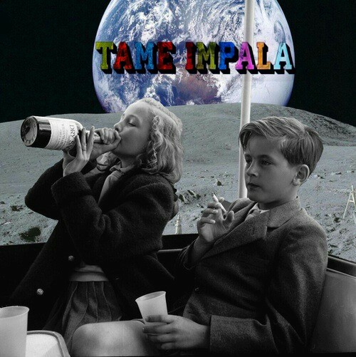

apartir daqui quebra a linha para baixo
linha quebrada no paragrafo
dar espaçamento com assim........certo amigo
uso da quebra de linha palavra compridas quando minimiza pagina ex: super
agora simbolos abaixo: < > ≤ ≥
£ ¥ €
© ® ™
∞ ± ⩱ √ ≠
Δ
← → ↑ ↓ ↔
♠ ♣ ♥ ♦
um texto com um p pula paragrafoex sublinhando aqui
com 'br' o texto vai uma a baixo
a seguirsubiscrito diminui a letradiminui tbm mais um pouco acima
regua horizontal divisão um risco linha 'hr' cor vermelha
Nesse odio todo sera se estou vivendo ou apenas existindo. ao lado da imagem por causa do float
| Coluna 1 cabeçalho | th em negrito | 3 |
|---|---|---|
| inteligencia | 1,4 | 10 |
| charme | 2,3 | 9 |
| força | 1,4 | 8 |
| media | 1,7 | 9 |
| foda 2 linhas | treinem mais | |
| ok.. 2 linha | ||
| ocupa linha inteira | ||
substitui a div, fazendo varias sections que quiser, organiza conteudos
para organizar o conteudo tbm
clique nos kids que ouvem tame impala
map de uma imagem modificadada atraves photoshop com f8 informaçoes e colocar tipo links na imagem direcionados com pixels/ estudar mais a respeito desse assunto
Ctrl+1-8: Troca de abas, conforme a ordem que elas estão abertas; Ctrl+W ou Ctrl+F4: Feche a aba atual; Ctrl+Shift+T: Reabrir a última aba que foi fechada; Ctrl+T: Abrir uma nova aba; Ctrl+N: Abrir uma nova janela.
Alt+esquerda, Backspace: Voltar uma janela; Alt+direita, Shift+Backspace: Avançar uma janela; F5: Atualizar a página; Ctrl+F5: Atualiza a página e o cache do site; ESC: Para de carregar; Alt+Home: Abrir a página inicial.
Espaço ou Page Down: Descer a uma janela; Shift+Espaço ou Page Up: Subir uma janela; Home: Vai para o topo da página; End: Vai para o final da página.
Ctrl+L ou Alt+D ou F6: Editar a barra de endereços; Ctrl+Enter: Caso você digite apenas uma palavra na barra de endereços (“Google”, por exemplo), o atalho inclui WWW. e “.com” no começo e final do termo; Alt+Enter: Abre o endereço digitado na barra de endereços em uma nova aba.
Ctrl+H: Abre o histórico do navegador; Ctrl+J: Abre janela de downloads; Ctrl+D: Favorita o site atual; Ctrl+Shift+Del: Abre a janela de limpeza de histórico do navegador.
Ctrl+P: Imprime a página atual; Ctrl+U: Abre o código-fonte da página (não funciona no Internet Explorer); ALT+F4: Fechar navegador WINDOWS + L:o computador é bloqueado de forma automática, sendo necessário digitar a senha novamente para abrir o Windows.
ctrl+S: salva a programação
CTRL + Z: que serve para retornar ao passo anterior, como se fosse uma tecla de recuperar.
CTRL + C CTRL + V: copiar e colar
CTRL+shift seta pro lado:vai selecionar as palavras ***** CTRL + A:todo o texto será selecionado.
CTRL+ seta pro lado: pula lado pro lado
CTRL+backspace:apaga palavra por palavra
seleciona tudo+CTRL+.+,:coloca tudo para comentario ou remove de comentario
CTRL + F:um campo de busca se abre e é possível procurar por palavras-chave em determinada página ou programa.
Espaço ou Page Down: Descer a uma janela; *** Shift+Espaço ou Page Up: Subir uma janela;
Home: Vai para o topo da página; *** End: Vai para o final da página.
F5: Atualizar a página;
Ctrl+1-8: Troca de abas, conforme a ordem que elas estão abertas;
Windows + Tab:Abrir a Visão de tarefas. / windows:abre iniciar
seleciona + shift + tab:para voltar linhas*****tab para avançar linhas
alt+cima e baixo:mudar um codigo, não funciona com sublime test no momento
CTRL+TAB:troca de janela de programação, alternando apenas duas ultimas entradas